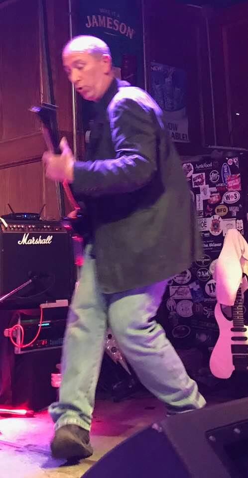

DiLo has been performing in the Baltimore music scene for over 30 years, most notably as lead guitarist for The Loft. His accomplishments with The Loft include opening for The Black Crowes in Ocean City, headlining college nights weekly at the original HammerJacks in Baltimore as well as performing on Star Search in 1995. His favorite musicians and biggest influences include ACDC, Manic Street Preachers, Joe Satriani, It Bites and Super Furry Animals.